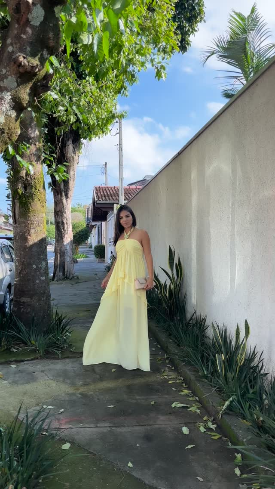
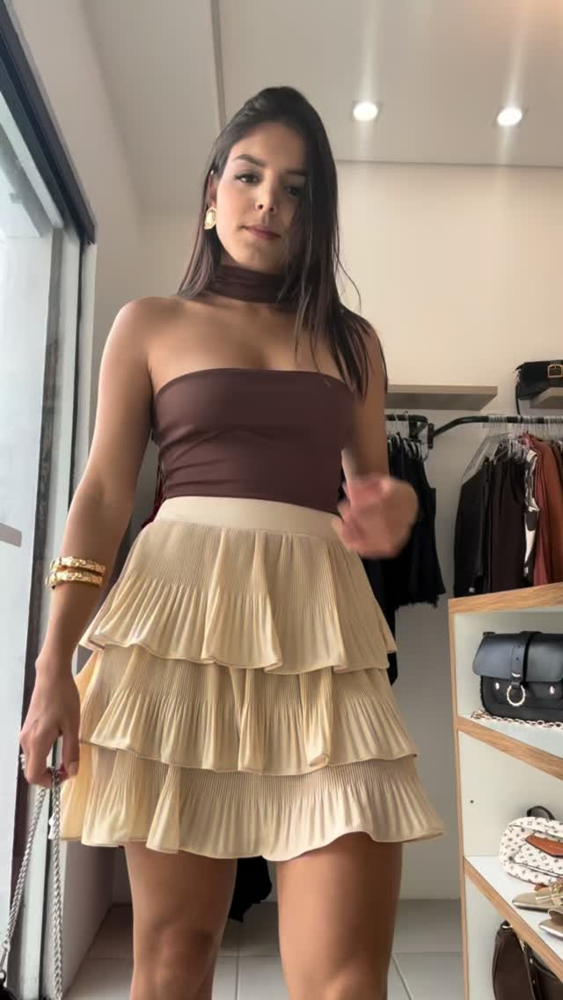
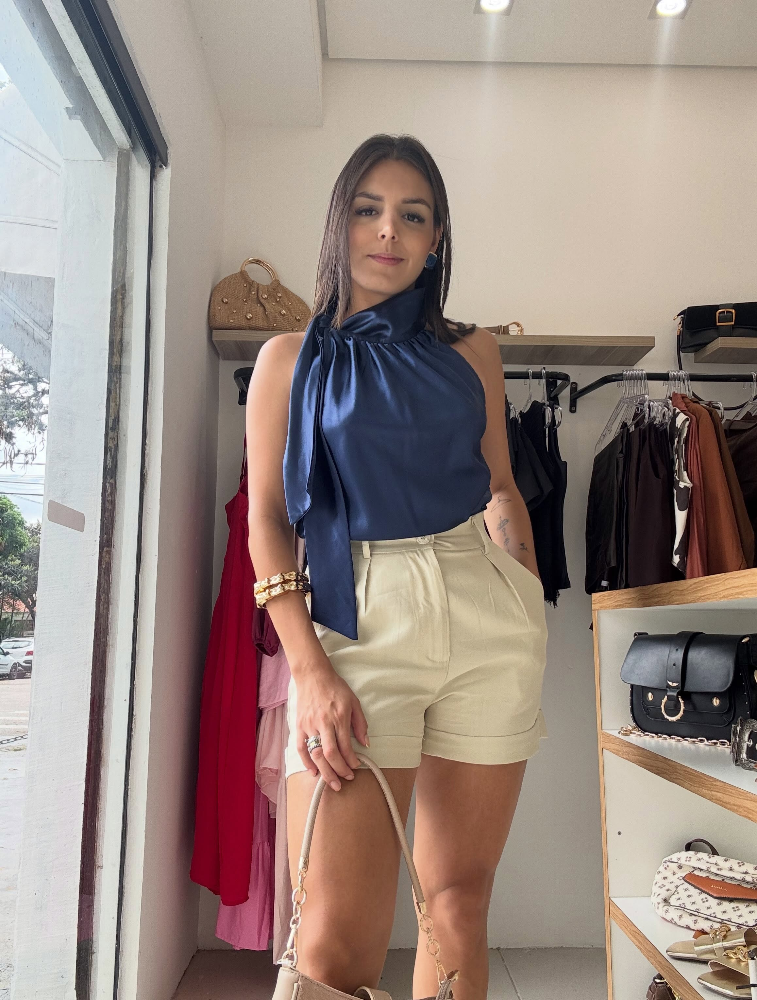
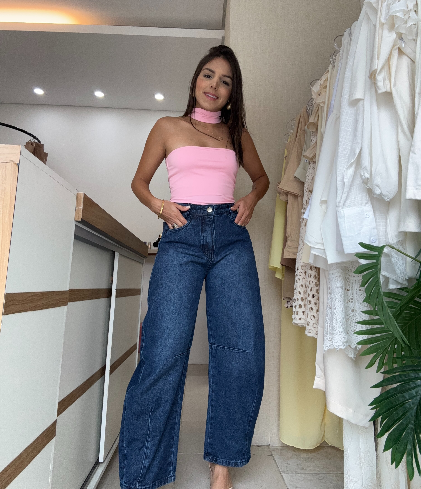
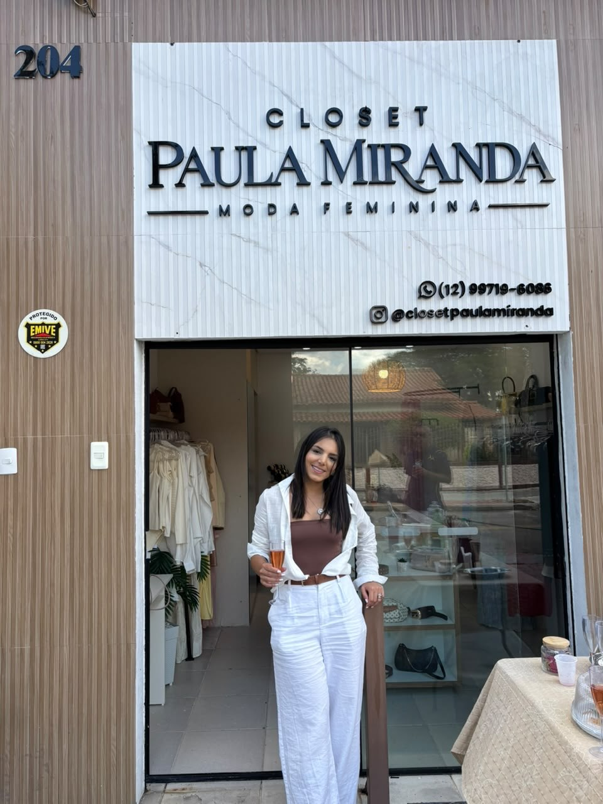
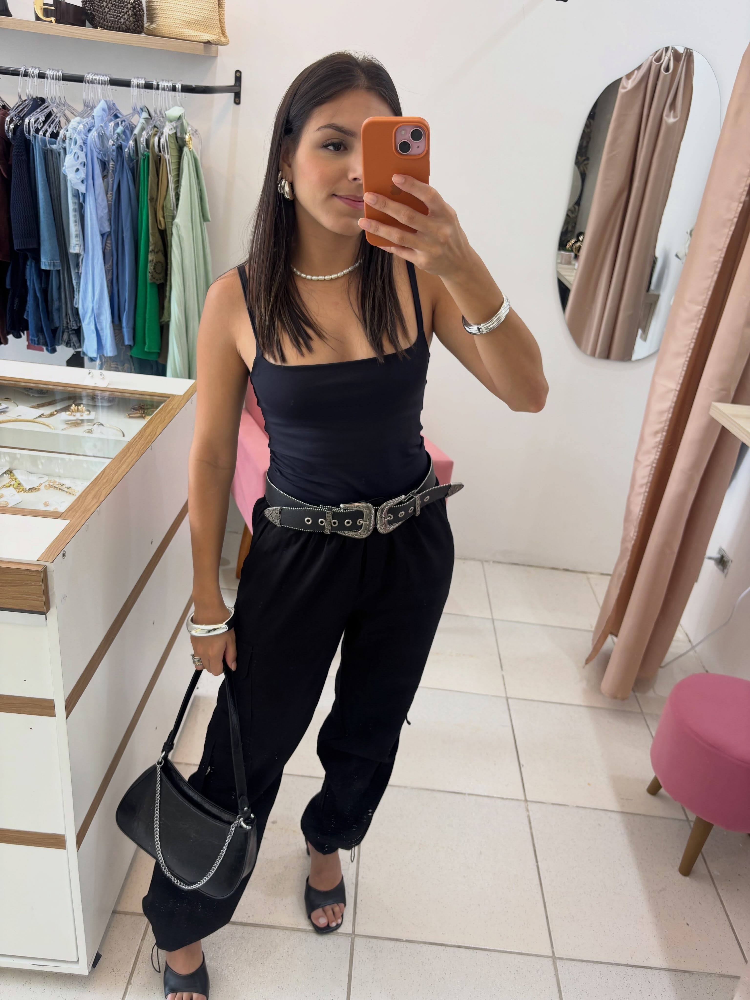
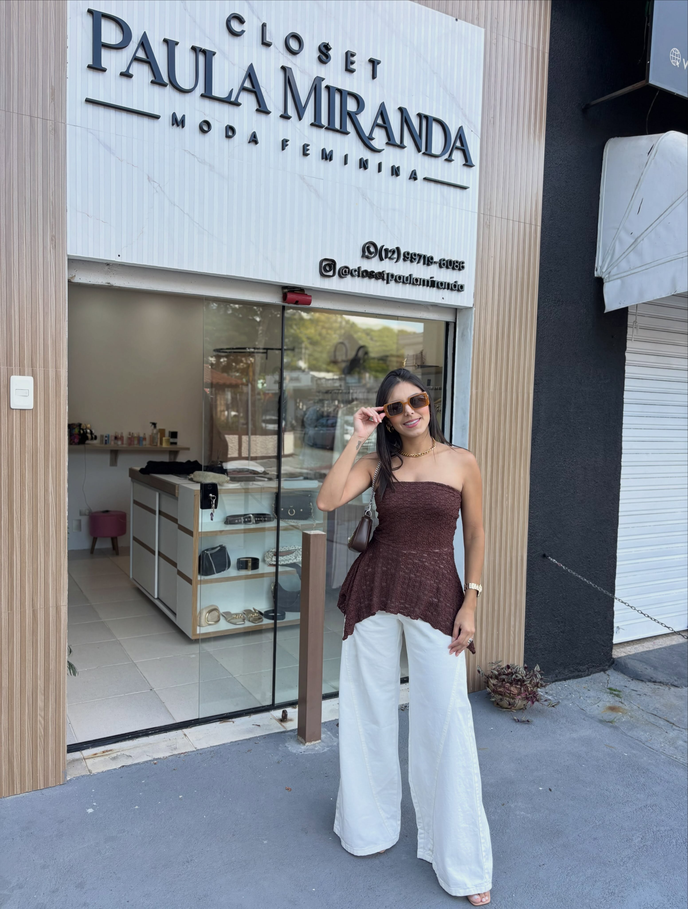

Curadoria realPeças mostradas no corpo, em looks possíveis.
Nova curadoria • Closet Paula Miranda
Seu look.
Seu momento.
Seu match.
Descubra peças que combinam com sua rotina e sua personalidade. Escolha, experimente e finalize com atendimento de verdade.
Comece pelo seu tamanho
A equipe confirma a disponibilidade durante o atendimento.

LOOK / 04Amarelo Solar
Para mulheres autênticas e despojadas.
Compra assistidaDúvidas de tamanho e combinação no WhatsApp.
Do seu jeitoRetire na loja ou combine o envio com a equipe.
01 / Novidades
Vista agora.
Decida com calma.
Use os filtros para encontrar o clima certo. Toque no coração para montar sua seleção e enviar tudo de uma vez para a Closet.
Viu algo que amou? Salve na sua seleção. Você não precisa decidir uma peça por vez.
02 / Diferencial exclusivo
✦ Leva menos de 1 minutoProvador
CPM.
Responda três perguntas e descubra os looks da curadoria que mais combinam com seu momento.
Sem cadastroSem compromissoCom atendimento humano
SEU MATCH DE ESTILO01 — 03
Para qual momento você quer se vestir?
Qual energia combina mais com você?
Qual tamanho devemos considerar?
O tamanho orienta a consulta. A disponibilidade será confirmada pela equipe.SEU MATCH
Essencial com presença
03 / Shop the look
A produção pronta.
Você dá o toque final.
Inspire-se na composição completa e peça ajuda para adaptar cores, peças e acessórios ao seu estilo.

LOOK 01Cacau & Areia

“A melhor peça é a que parece sua antes mesmo de sair da loja.”

04 / Compra simples
Do match
para o closet.
- 01Explore
Filtre por ocasião ou use o Provador CPM.
- 02Monte sua seleção
Salve quantos looks quiser e indique o tamanho.
- 03Finalize com a equipe
Receba confirmação de valores, disponibilidade e envio pelo WhatsApp.
05 / Também é experiência
Prove. Combine.
Faça ser seu.
Se você está em São José dos Campos, venha conhecer a curadoria de perto e experimentar com calma.
- Endereço
- Rua Planura, 204
São José dos Campos — SP - Horários
- Seg a sex: 10h às 18h
Sábado: 10h às 15h


Rua Planuranº 204
